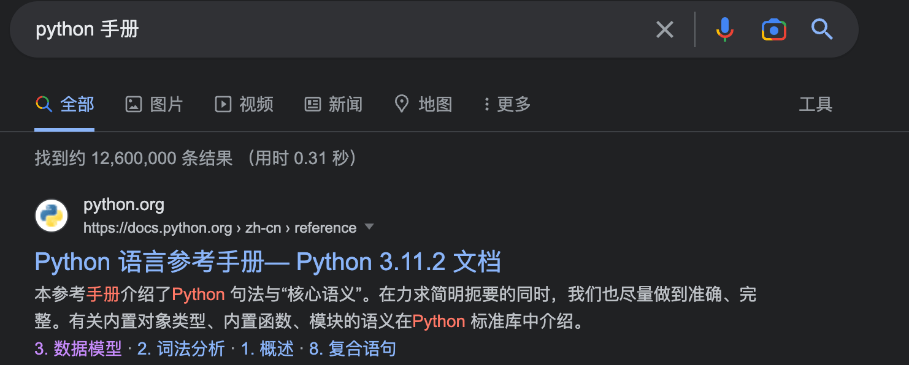
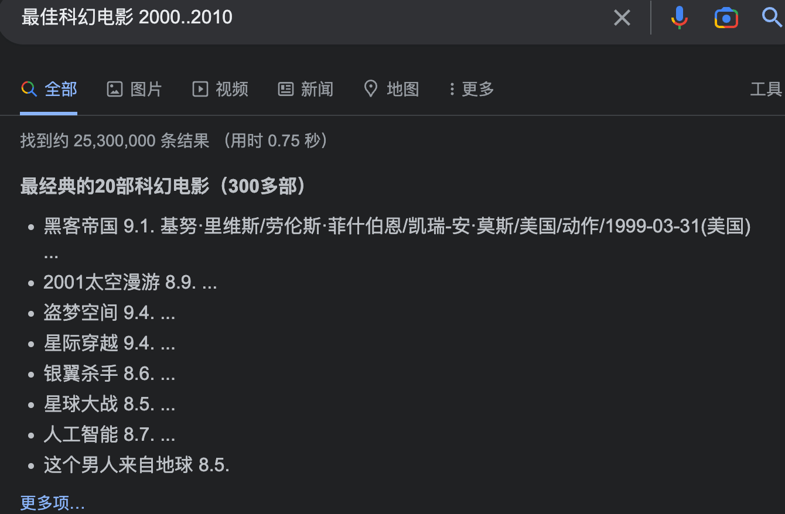

検索エンジンは、私たちの日常生活に欠かせないツールの一つです。検索エンジンを利用することで、インターネット上で必要なあらゆる情報を見つけることができます。
現在、世界で最も有名で最も頻繁に使用されている検索エンジンには、Google、Baidu、Bing、Yahoo!などがあります。

普段、検索エンジンを使用する際、直接キーワードを入力する以外にも、高度なテクニックが数多くあります。次に、Google検索エンジンを例として説明します。
1、二重引用符 ""
双引号""検索キーワードを正確に一致させることができ、入力したキーワードが分割されることはありません。
例えば、「"python range 用法"」を検索すると、ダブルクォーテーションを使用した場合と使用しない場合で結果が異なることがわかります。


除外記号：-
特定の結果を除外したい場合は、検索語の前にマイナス記号（-）を付けます。-符号。
例如，我们搜索 "python -菜鸟教程" 将返回与"python"有关的结果，但不包括任何与"菜鸟教程"有关的结果。


通配符：*
使用通配符*不完全な単語や変形した単語を見つけるのに役立ちます。
例えば、「"python * 手册"」を検索すると、「python」と「手册（マニュアル）」をキーワードとするすべての結果が返されます。


縦棒記号：|
縦棒記号の使用|同じ検索で複数のオプションを検索できます。
例えば、「python | java」を検索すると、結果に両方の公式サイトが表示されます。

特定のサイトを検索：site:
特定のウェブサイトのみを検索したい場合は、検索語の前に「site:」を付けます。site:サイトのURL。
例えば、「site:runoob.com java」を検索すると、菜鸟教程（RUNOOB）サイト内で「java」に関連するすべての結果が返されます。

関連サイトを検索：related:
使用related:特定のウェブサイトに関連する他のウェブサイトを見つけるのに役立ちます。
例えば、「related:runoob.com」を検索すると、菜鸟教程（RUNOOB）に関連するすべてのウェブサイトが返されます。

括弧の使用：()
括弧を使用すると、検索をより適切に整理できます。
例えば、「（python OR java） site:runoob.com」を検索すると、RUNOOBサイト内で「python」または「java」に関連するすべての結果が返されます。

検索範囲：..
使用两个点..範囲を検索できます。
例えば、次のように検索します"最高のSF映画 2000..2010"2000年から2010年までの間に公開されたすべてのSF映画の結果が返されます。

その他にも、いくつかの高度な検索テクニックがあります：
定義：define: 「define:」を使用すると、特定の単語の定義をすばやく取得できます。例えば、「define:人工知能」を検索すると、人工知能の定義が返されます。
時間範囲：daterange: 「daterange:」を使用すると、特定の時間範囲内のコンテンツを検索できます。例えば、「マラソン大会 daterange:2011-01-01..2022-01-01」を検索すると、2011年から2022年までのマラソン大会に関連する結果が返されます。
ファイルタイプ：filetype: 「filetype:」を使用すると、特定の種類のファイルを検索できます。例えば、「pythonマニュアル filetype:pdf」を検索すると、PDF形式で保存されたpythonマニュアルに関連するすべてのファイルが返されます。
タイトルキーワード検索：intitle:index.of: 「intitle:index.of」を使用すると、ページのtitleタグに特定のキーワードを含むすべてのページを検索できます。例えば、「intitle:index.of mp3」を検索すると、mp3ファイルを含むディレクトリリストが返されます。
リンク検索：link: 「link:」を使用すると、指定したウェブサイトにリンクしているすべてのウェブページを検索できます。例えば、「link:runoob.com」を検索すると、RUNOOBに関連するすべてのウェブページリンクが返されます。
略語検索：acronym: 「acronym:」を使用すると、略語の定義を検索できます。例えば、「acronym:AI」を検索すると、人工知能に関連する定義が返されます。
クリックしてノートを共有
笔记需要是本篇文章的内容扩展！
文章投稿，可点击这里
注册邀请码获取方式
分享笔记前必须登录！
注册邀请码获取方式